By Richard (@P7RIM3) · October 14, 2026 (ET) · update for "REA, hands-on" (Oct 13, REA 6.4.0), §10.3, §10.5 and §10.7
Yesterday these three sections were docs-only because the engines weren't installed. Today I installed them on the same Grok Bot box (Debian 13, x64, Node 24.21.0, JDK 21, Ghidra 12.1.4) and ran each route with REA 6.5.0 (npm
rea-agents@6.5.0) on safe targets: an Apache-2.0 sample APK that REA's own tests pin, and a firmware image and .NET assembly I built myself. All output below is real. Nothing was run on Windows or macOS, and nothing was posted anywhere.
| 6.4.0 article section | Status yesterday | Status now |
|---|---|---|
| §10.3 Android | "I didn't run these. My box has no JADX, no adb and no APK" | ✅ Package, class search, method decompile (JADX headless 0.7.1), Apktool 3.0.3 resource decode, adb client + device list |
| §10.5 Firmware | "I didn't run it, because Binwalk and Unblob aren't installed" | ✅ Binwalk 3.1.0 regions, Unblob 26.6.4 extraction (with sasquatch), extracted ELF → Ghidra |
| §10.7 .NET | "I had no .NET assembly to test on, so this one's docs-only" | ✅ Artifact metadata, members with IL sizes, ldstr literals, call edges, P/Invoke boundary |
rea doctor |
host unsupported, no JADX check passing |
host PASS, jadx PASS (12 PASS / 4 FAIL; see below) |
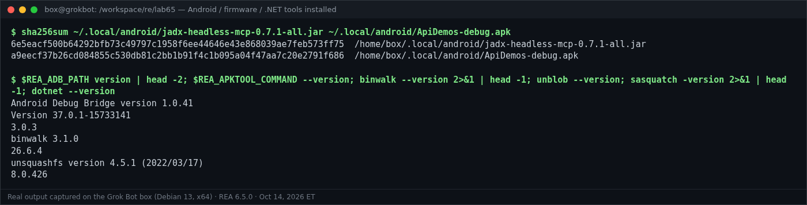
$ sha256sum ~/.local/android/jadx-headless-mcp-0.7.1-all.jar ~/.local/android/ApiDemos-debug.apk
6e5eacf500b64292bfb73c49797c1958f6ee44646e43e868039ae7feb573ff75 /home/box/.local/android/jadx-headless-mcp-0.7.1-all.jar
a9eecf37b26cd084855c530db81c2bb1b91f4c1b095a04f47aa7c20e2791f686 /home/box/.local/android/ApiDemos-debug.apk
$ $REA_ADB_PATH version | head -2; $REA_APKTOOL_COMMAND --version; binwalk --version 2>&1 | head -1; unblob --version; sasquatch -version 2>&1 | head -1; dotnet --version
Android Debug Bridge version 1.0.41
Version 37.0.1-15733141
3.0.3
binwalk 3.1.0
26.6.4
unsquashfs version 4.5.1 (2022/03/17)
8.0.426
What I installed, and where REA finds it:
| Engine | Version | How | REA variable |
|---|---|---|---|
| JADX headless MCP | 0.7.1 (-all.jar, SHA-256 matches REA's pin) |
download from the JADX headless MCP release | REA_JADX_MCP_JAR |
| Android platform-tools (adb) | 37.0.1 (adb 1.0.41) | Google's platform-tools zip | REA_ADB_PATH |
| Apktool | 3.0.3 | jar + wrapper script | REA_APKTOOL_COMMAND |
| Binwalk | 3.1.0 | cargo install binwalk --version 3.1.0 --locked (no Linux release binary) |
REA_BINWALK_COMMAND |
| Unblob | 26.6.4 | Python venv, plus libmagic1 lz4 zstd p7zip-full e2fsprogs and sasquatch v4.5.1-6 |
REA_UNBLOB_COMMAND |
| .NET SDK | 8.0.426 | user-local SDK in ~/.local/dotnet (only to build my test assembly; REA's managed route needs no engine) |
none |
Test APK: Appium ApiDemos 6.0.18 debug build (Apache-2.0). Its SHA-256 a9eecf37…f686 matches the fixture REA's tests use.
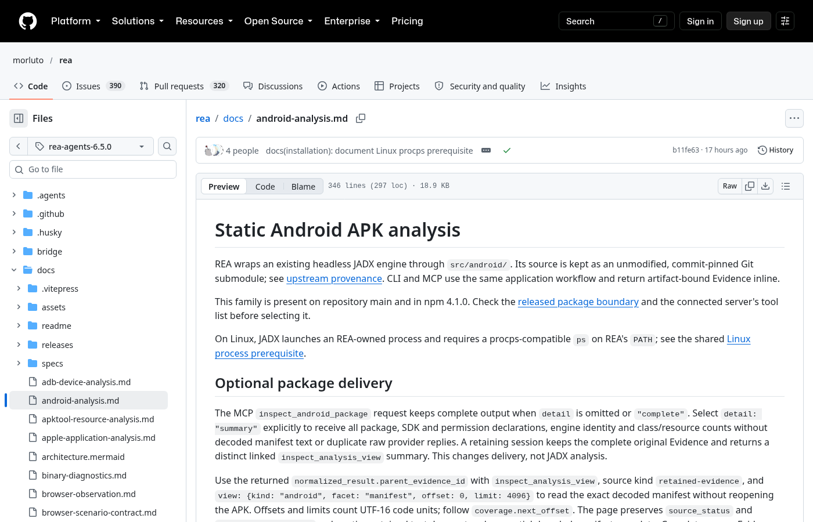
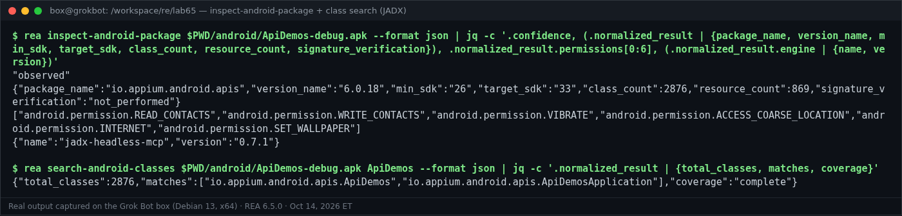
$ rea inspect-android-package $PWD/android/ApiDemos-debug.apk --format json | jq -c '.confidence, (.normalized_result | {package_name, version_name, min_sdk, target_sdk, class_count, resource_count, signature_verification}), .normalized_result.permissions[0:6], (.normalized_result.engine | {name, version})'
"observed"
{"package_name":"io.appium.android.apis","version_name":"6.0.18","min_sdk":"26","target_sdk":"33","class_count":2876,"resource_count":869,"signature_verification":"not_performed"}
["android.permission.READ_CONTACTS","android.permission.WRITE_CONTACTS","android.permission.VIBRATE","android.permission.ACCESS_COARSE_LOCATION","android.permission.INTERNET","android.permission.SET_WALLPAPER"]
{"name":"jadx-headless-mcp","version":"0.7.1"}
$ rea search-android-classes $PWD/android/ApiDemos-debug.apk ApiDemos --format json | jq -c '.normalized_result | {total_classes, matches, coverage}'
{"total_classes":2876,"matches":["io.appium.android.apis.ApiDemos","io.appium.android.apis.ApiDemosApplication"],"coverage":"complete"}
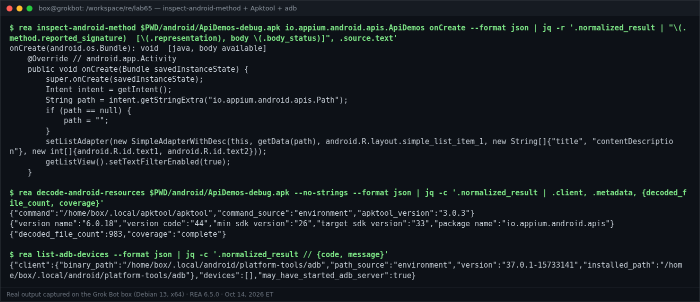
$ rea inspect-android-method $PWD/android/ApiDemos-debug.apk io.appium.android.apis.ApiDemos onCreate --format json | jq -r '.normalized_result | "\(.method.reported_signature) [\(.representation), body \(.body_status)]", .source.text'
onCreate(android.os.Bundle): void [java, body available]
@Override // android.app.Activity
public void onCreate(Bundle savedInstanceState) {
super.onCreate(savedInstanceState);
Intent intent = getIntent();
String path = intent.getStringExtra("io.appium.android.apis.Path");
if (path == null) {
path = "";
}
setListAdapter(new SimpleAdapterWithDesc(this, getData(path), android.R.layout.simple_list_item_1, new String[]{"title", "contentDescription"}, new int[]{android.R.id.text1, android.R.id.text2}));
getListView().setTextFilterEnabled(true);
}
$ rea decode-android-resources $PWD/android/ApiDemos-debug.apk --no-strings --format json | jq -c '.normalized_result | .client, .metadata, {decoded_file_count, coverage}'
{"command":"/home/box/.local/apktool/apktool","command_source":"environment","apktool_version":"3.0.3"}
{"version_name":"6.0.18","version_code":"44","min_sdk_version":"26","target_sdk_version":"33","package_name":"io.appium.android.apis"}
{"decoded_file_count":983,"coverage":"complete"}
$ rea list-adb-devices --format json | jq -c '.normalized_result // {code, message}'
{"client":{"binary_path":"/home/box/.local/android/platform-tools/adb","path_source":"environment","version":"37.0.1-15733141","installed_path":"/home/box/.local/android/platform-tools/adb"},"devices":[],"may_have_started_adb_server":true}
Notes:
- signature_verification: "not_performed": REA reports the APK's declarations; it doesn't vouch for the signature.
- list-adb-devices says may_have_started_adb_server: true. It had, so I ran adb kill-server afterwards.
- The device-changing tools (install_adb_package, push_adb_file, start_adb_app) were not run. There's no device, and they're side-effecting by design.
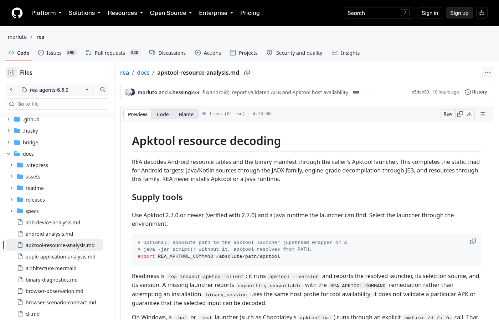
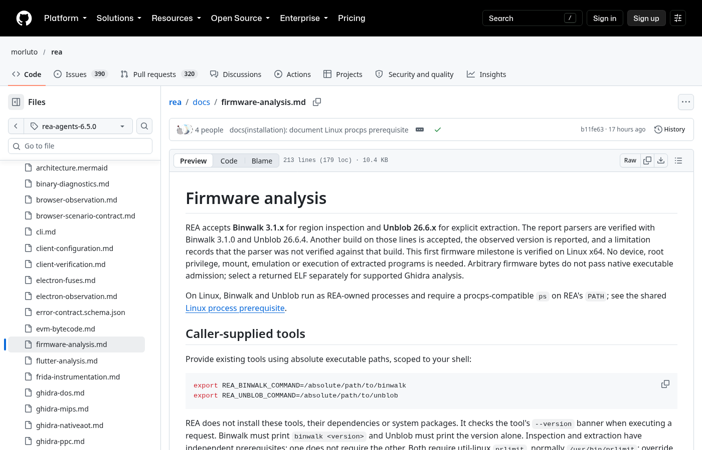
My image lab65-fw.bin (188,416 bytes) is a 512-byte custom LAB65FW header, then an xz-compressed squashfs root filesystem (a Rust daemon bin/hellod, etc/device.conf, www/index.html), then a gzip'd tar with wifi.conf, padded to 4 KiB.
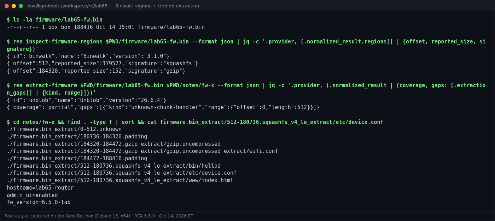
$ ls -la firmware/lab65-fw.bin
-r--r--r-- 1 box box 188416 Oct 14 15:01 firmware/lab65-fw.bin
$ rea inspect-firmware-regions $PWD/firmware/lab65-fw.bin --format json | jq -c '.provider, (.normalized_result.regions[] | {offset, reported_size, signature})'
{"id":"binwalk","name":"Binwalk","version":"3.1.0"}
{"offset":512,"reported_size":179527,"signature":"squashfs"}
{"offset":184320,"reported_size":152,"signature":"gzip"}
$ rea extract-firmware $PWD/firmware/lab65-fw.bin $PWD/notes/fw-x --format json | jq -c '.provider, (.normalized_result | {coverage, gaps: [.extraction_gaps[] | {kind, range}]})'
{"id":"unblob","name":"Unblob","version":"26.6.4"}
{"coverage":"partial","gaps":[{"kind":"unknown-chunk-handler","range":{"offset":0,"length":512}}]}
$ cd notes/fw-x && find . -type f | sort && cat firmware.bin_extract/512-180736.squashfs_v4_le_extract/etc/device.conf
./firmware.bin_extract/0-512.unknown
./firmware.bin_extract/180736-184320.padding
./firmware.bin_extract/184320-184472.gzip_extract/gzip.uncompressed
./firmware.bin_extract/184320-184472.gzip_extract/gzip.uncompressed_extract/wifi.conf
./firmware.bin_extract/184472-188416.padding
./firmware.bin_extract/512-180736.squashfs_v4_le_extract/bin/hellod
./firmware.bin_extract/512-180736.squashfs_v4_le_extract/etc/device.conf
./firmware.bin_extract/512-180736.squashfs_v4_le_extract/www/index.html
hostname=lab65-router
admin_ui=enabled
fw_version=6.5.0-lab
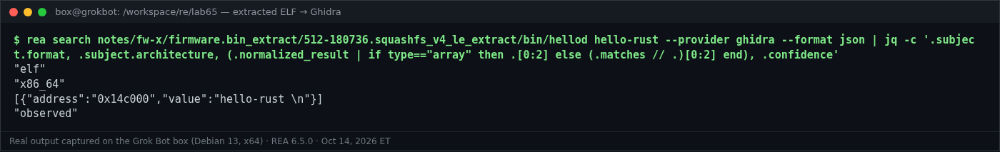
$ rea search notes/fw-x/firmware.bin_extract/512-180736.squashfs_v4_le_extract/bin/hellod hello-rust --provider ghidra --format json | jq -c '.subject.format, .subject.architecture, (.normalized_result | if type=="array" then .[0:2] else (.matches // .)[0:2] end), .confidence'
"elf"
"x86_64"
[{"address":"0x14c000","value":"hello-rust \n"}]
"observed"
The one remaining gap (unknown-chunk-handler, bytes 0–512) is my custom header, which is correct. On the first run, before sasquatch was installed, Unblob reported missing-extractor-dependency: sasquatch for squashfs_v4_le and left the rootfs packed. REA surfaced that as an explicit gap instead of a silent "done".
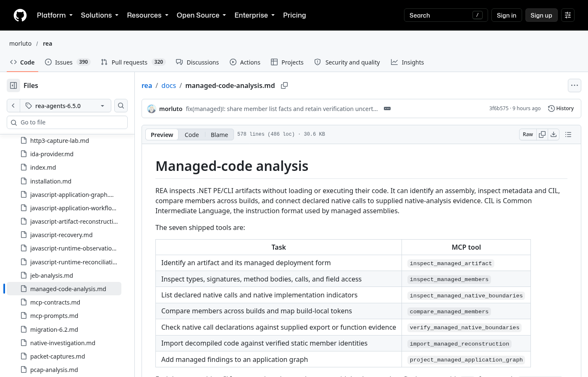
My assembly PromoLab.dll (.NET 8) is a harmless promo-code format checker with one P/Invoke:
public sealed class PromoCode
{
private const string Banner = "PromoLab code formatter v1";
public static bool IsWellFormed(string code) => code.Length == 8 && code.StartsWith("LAB-") && Checksum(code) % 7 == 3;
internal static int Checksum(string s) { int acc = 0; foreach (char c in s) acc = acc * 31 + c; return Math.Abs(acc); }
public string Describe() => Banner;
}
public static class Native { [DllImport("libc", EntryPoint = "getpid")] public static extern int GetPid(); }
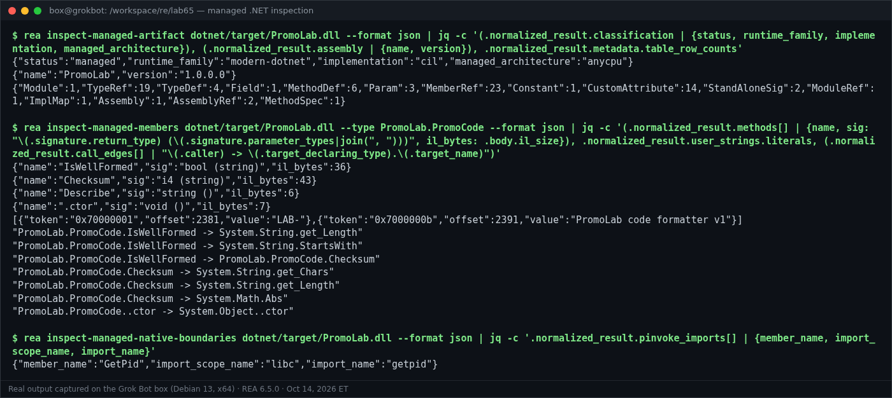
$ rea inspect-managed-artifact dotnet/target/PromoLab.dll --format json | jq -c '(.normalized_result.classification | {status, runtime_family, implementation, managed_architecture}), (.normalized_result.assembly | {name, version}), .normalized_result.metadata.table_row_counts'
{"status":"managed","runtime_family":"modern-dotnet","implementation":"cil","managed_architecture":"anycpu"}
{"name":"PromoLab","version":"1.0.0.0"}
{"Module":1,"TypeRef":19,"TypeDef":4,"Field":1,"MethodDef":6,"Param":3,"MemberRef":23,"Constant":1,"CustomAttribute":14,"StandAloneSig":2,"ModuleRef":1,"ImplMap":1,"Assembly":1,"AssemblyRef":2,"MethodSpec":1}
$ rea inspect-managed-members dotnet/target/PromoLab.dll --type PromoLab.PromoCode --format json | jq -c '(.normalized_result.methods[] | {name, sig: "\(.signature.return_type) (\(.signature.parameter_types|join(", ")))", il_bytes: .body.il_size}), .normalized_result.user_strings.literals, (.normalized_result.call_edges[] | "\(.caller) -> \(.target_declaring_type).\(.target_name)")'
{"name":"IsWellFormed","sig":"bool (string)","il_bytes":36}
{"name":"Checksum","sig":"i4 (string)","il_bytes":43}
{"name":"Describe","sig":"string ()","il_bytes":6}
{"name":".ctor","sig":"void ()","il_bytes":7}
[{"token":"0x70000001","offset":2381,"value":"LAB-"},{"token":"0x7000000b","offset":2391,"value":"PromoLab code formatter v1"}]
"PromoLab.PromoCode.IsWellFormed -> System.String.get_Length"
"PromoLab.PromoCode.IsWellFormed -> System.String.StartsWith"
"PromoLab.PromoCode.IsWellFormed -> PromoLab.PromoCode.Checksum"
"PromoLab.PromoCode.Checksum -> System.String.get_Chars"
"PromoLab.PromoCode.Checksum -> System.String.get_Length"
"PromoLab.PromoCode.Checksum -> System.Math.Abs"
"PromoLab.PromoCode..ctor -> System.Object..ctor"
$ rea inspect-managed-native-boundaries dotnet/target/PromoLab.dll --format json | jq -c '.normalized_result.pinvoke_imports[] | {member_name, import_scope_name, import_name}'
{"member_name":"GetPid","import_scope_name":"libc","import_name":"getpid"}
REA never loads or runs the assembly. 6.5.0 adds the decoded ldstr literals and a declaring type on every call target, and both show up here.
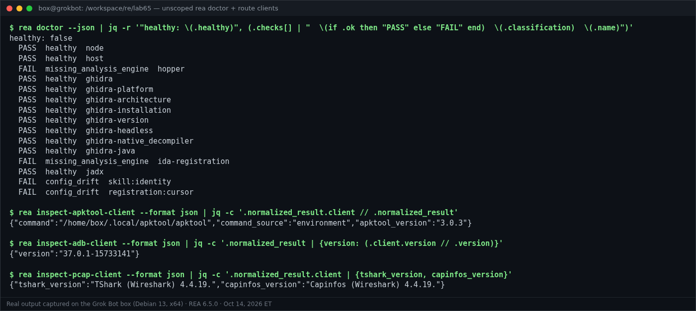
$ rea doctor --json | jq -r '"healthy: \(.healthy)", (.checks[] | " \(if .ok then "PASS" else "FAIL" end) \(.classification) \(.name)")'
healthy: false
PASS healthy node
PASS healthy host
FAIL missing_analysis_engine hopper
PASS healthy ghidra
PASS healthy ghidra-platform
PASS healthy ghidra-architecture
PASS healthy ghidra-installation
PASS healthy ghidra-version
PASS healthy ghidra-headless
PASS healthy ghidra-native_decompiler
PASS healthy ghidra-java
FAIL missing_analysis_engine ida-registration
PASS healthy jadx
FAIL config_drift skill:identity
FAIL config_drift registration:cursor
$ rea inspect-apktool-client --format json | jq -c '.normalized_result.client // .normalized_result'
{"command":"/home/box/.local/apktool/apktool","command_source":"environment","apktool_version":"3.0.3"}
$ rea inspect-adb-client --format json | jq -c '.normalized_result | {version: (.client.version // .version)}'
{"version":"37.0.1-15733141"}
$ rea inspect-pcap-client --format json | jq -c '.normalized_result.client | {tshark_version, capinfos_version}'
{"tshark_version":"TShark (Wireshark) 4.4.19.","capinfos_version":"Capinfos (Wireshark) 4.4.19."}
| Check | Result | Why |
|---|---|---|
| node, host | PASS | Node 24.21.0; Debian 13 is now a supported host |
| ghidra (+7 sub-checks) | PASS | Ghidra 12.1.4, JDK 21.0.12.1 |
| jadx | PASS | REA_JADX_MCP_JAR → jadx-headless-mcp 0.7.1 |
| hopper | FAIL | Not installed (Hopper is the macOS default) |
| ida-registration | FAIL | No IDA MCP configured |
| skill:identity, registration:cursor | FAIL (config drift) | Doctor suggests rea setup; I didn't run it because it edits client configs |
Doctor has no Binwalk, Unblob, Apktool, adb or TShark check. Apktool, adb and TShark have their own inspect-*-client commands (shown above). Binwalk and Unblob are verified by running the route (§3).